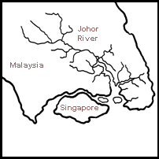
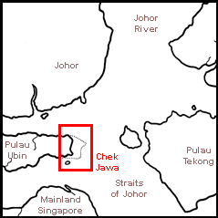

|
|
| index of concepts |
| Geography
and our shores updated Dec 2019
The Northern shores such as those at Pasir Ris, Changi and Pulau Ubin (Chek Jawa, Pulau Sekudu) lie at the mouth of the Johor River in the Straits of Johor. The mighty Johor River is one of the most important influences on seashore life here. The freshwater and nutrients that flows from the river affects the plants and animals on our Northern shores. Nutrients flowing down the Johor River play affect the food chains of our Northern shores. For example, the seasonal increase in nutrient flow results in 'blooms' of seaweeds that can form thick, green carpets on the Northern shores. These seaweeds in turn provide food for animals. Too Fresh? The Johor River supplies lots of freshwater, so the waters here are less salty than that around places such as the Southern Islands. The lower salinity affects the kind of living things that can be commonly found on our Northern shores. These are often different from those found on our Southern shores. |
|
 |
 |
| Death by Freshwater: The prolonged
flooding in 2007 lead to mass deaths on Chek Jawa as the sea creatures
there were exposed to a long period of low salinity. Currents of Life and Death: Currents moving along the shore and waves that wash ashore on can change its shape and structure. Such changes affect the plants and animals that live there. These currents cause sand bars to shift constantly. These shifts change the dimentions of the lagoon that forms behind the sand bar. Plants and animals near the sand bar may get buried over time. This is a natural process. Currents may also change due to human activities nearby, such as land reclamation. |
Links
|